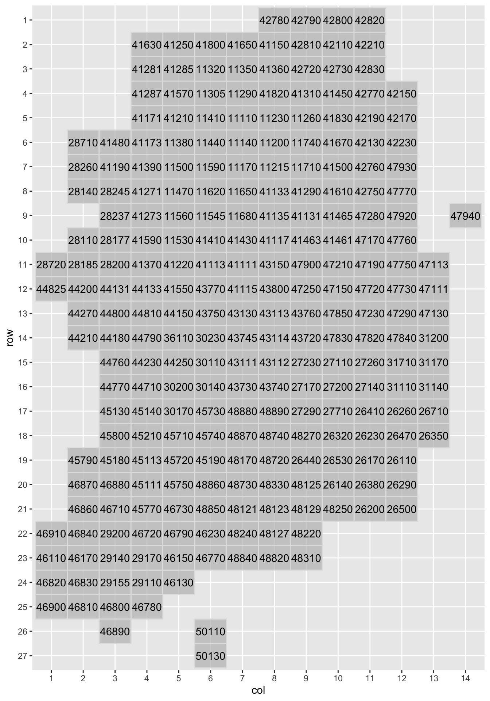
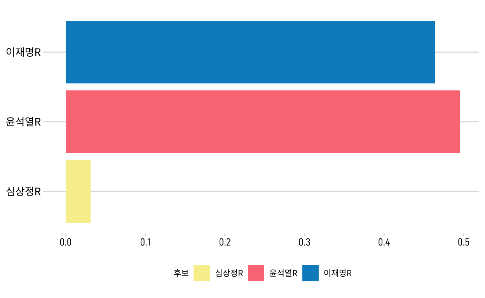
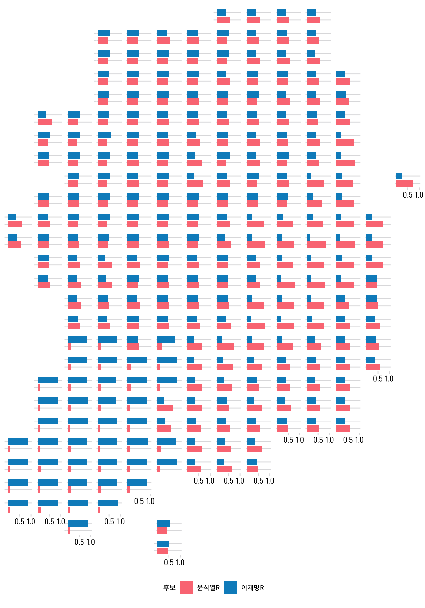

geo_grid를 활용한 시각화
멋드러진 해외의 선거 시각화

해외 언론에서 선거 결과를 시각화한 기사를 볼 때마다 드는 생각이 있습니다. “아 우리나라도 저렇게 격자형태로 시각화하면 멋드러지지 않을까…” 국내에서는 시군구 혹은 읍면동 단위로 색을 칠하는 형태가 대부분이지 그 안에 그래프를 넣어서 시각화하기가 힘들어요. 미국은 50개 주에 1개의 특별구로 이루어졌으니, 필요한 격자는 51개 뿐이지만 우리나라의 시군구는 250개. 큰 권역 구분 정도는 다양한 시각화를 시도할 수 있지만 시군구 단위로 하기엔 부담이 될 수 있는거죠.
geofacet package
그래도 해보고 싶습니다. 우리나라도 시군구 단위로 멋드러지게 만들고 싶어요. 그래서(!) 시군구 단위 그리드 만들어 봤습니다. 활용한 패키지는 geofacet입니다. geofacet은 말 그대로 지리적 정보(geo)로 면(facet)을 분할해 볼 수 있는 패키지인데요, 이 패키지가 좋은 건 Grid Designer라는 기능을 통해 자기만의 그리드를 만들 수 있다는 거죠. 그래서 지도를 펼치고 250개 시군구의 위치를 하나하나 지정해가며 만들어 봤습니다. geofacet package에도 제출해 놓았습니다. 여기에서 확인할 수 있어요.
# A tibble: 6 × 4
code row col name
<chr> <dbl> <dbl> <chr>
1 11110 5 7 서울특별시 종로구
2 11140 6 7 서울특별시 중구
3 11170 7 7 서울특별시 용산구
4 11200 6 8 서울특별시 성동구
5 11215 7 8 서울특별시 광진구
6 11230 5 8 서울특별시 동대문구만들어 놓은 대한민국 시군구 단위 그리드 구조는 아주 간단합니다. 이름, row, col, code 정도로 이루어져 있죠. geofacet 함수는 그리드의 행(row)과 열(col)을 인식해서 그 모양에 맞춰 facet해 주는 구조입니다. 이 그리드를 가지고 그려보면 이런 모양이 나옵니다.
geofacet::grid_preview(mygrid)
짜잔~ 면적이 서로 다른 시군구를 동일한 면적 단위로 표현했기때문에 실제 위치와는 차이가 있을 수 있습니다. 시군구 그리드에 적용된 코드는 행정안전부에서 제공하고 있는 행정표준코드를 따라서 만들어 놓았습니다. 종로구(11110), 중구(11140) 이런식으로 말이죠. 시군구 단위의 여러 데이터들을 합쳐서 시각화, 분석할 일 있으면 행정코드 기준으로 정리한다면 간단하게 할 수 있을 겁니다.
geo_grid + ggplot
선거 데이터 만들기
이제 여기에 해야할 것은 각각의 시군구에 그래프를 넣어보는 겁니다. 이번 대통령 선거 득표 정보를 바탕으로 그래프를 넣어보려고 해요. 선관위 개표 데이터를 정리해서 다음과 같은 데이터(PE_20)를 만들어 봤습니다. PE_20 데이터는 여기에서 다운받을 수 있습니다.
head(PE_20)# A tibble: 6 × 21
code 구분 시군구명 선거인수 투표수 이재명 윤석열 심상정 오준호
<dbl> <chr> <chr> <dbl> <dbl> <dbl> <dbl> <dbl> <dbl>
1 11110 서울특별… 종로구 129968 100629 46130 49172 3115 53
2 11140 서울특별… 중구 111448 84998 38244 42906 2310 46
3 11170 서울특별… 용산구 199077 152068 60063 85047 4374 67
4 11200 서울특별… 성동구 252087 197240 84411 103880 5365 123
5 11215 서울특별… 광진구 303582 235471 109922 113733 7072 155
6 11230 서울특별… 동대문구 300928 232106 108171 112890 6416 151
# … with 12 more variables: 허경영 <dbl>, 이백윤 <dbl>, 옥은호 <dbl>,
# 김경재 <dbl>, 조원진 <dbl>, 김재연 <dbl>, 이경희 <dbl>,
# 김민찬 <dbl>, 계 <dbl>, 무효투표수 <dbl>, 기권수 <dbl>,
# 개표율 <dbl>PE_20 데이터에는 각 시군구 단위로 후보별 득표수를 넣어 두었습니다. 시군구별 선거인수, 후보별 득표수, 무효투표수, 기권수 등… 이 데이터로 시각화를 바로 할 순 없습니다. 우리에게 필요한 건 각 후보별 득표율이니까, 조금 더 정제할 필요가 있죠. 일단 득표율 TOP3 후보의 득표율을 계산해보겠습니다. 득표율은 후보별 투표수를 전체 투표수 - 무효투표수로 나누면 됩니다.
library(dplyr)
PE_20 <- PE_20 %>% mutate(이재명R = 이재명 / (투표수 - 무효투표수),
윤석열R = 윤석열 / (투표수 - 무효투표수),
심상정R = 심상정 / (투표수 - 무효투표수))
PE_20_rate <- PE_20 %>% select(c(code, 이재명R, 윤석열R, 심상정R, 구분, 시군구명))
head(PE_20_rate)# A tibble: 6 × 6
code 이재명R 윤석열R 심상정R 구분 시군구명
<dbl> <dbl> <dbl> <dbl> <chr> <chr>
1 11110 0.464 0.495 0.0313 서울특별시 종로구
2 11140 0.454 0.510 0.0274 서울특별시 중구
3 11170 0.399 0.564 0.0290 서울특별시 용산구
4 11200 0.432 0.532 0.0275 서울특별시 성동구
5 11215 0.472 0.488 0.0304 서울특별시 광진구
6 11230 0.471 0.492 0.0279 서울특별시 동대문구제대로 계산되었는지 비교해봅시다. 선관위 홈페이지에서 살펴보면 종로구에서 3명의 후보의 득표율이 46.42%, 49.48%, 3.13%였고, 중구에서의 득표율이 각각 45.42%, 50.96%, 2.74% 군요. 계산된 것과 비교해보니 맞는것 같습니다. 계산된 데이터는 wide form인데 시각화를 위해선 long form으로 조정할 필요가 있어요.
long form 으로 만들기
long form으로 바꾸는 법은 여러가지가 있지만 여기선 2개를 소개해드리겠습니다. 먼저 tidyr 패키지의 gather 함수. gather 함수가 직관적이지 않다면 그 대안으로 나온 pivot_longer를 사용하는 것도 방법입니다. 두 함수의 결과는 같으니까 원하는 것 사용하면 될 겁니다. tidyr 패키지 제작자인 해들리 위컴은 새로 나온 pivot_longer함수를 추천하고 있어요.
library(tidyr)
PE_20_final <- PE_20_rate %>% gather(key = "후보", value = "득표율", 이재명R, 윤석열R, 심상정R)
# key: long form 데이터로 바꾸었을 때 이름이 될 칼럼명
# value: long form 데이터로 바꾸었을 때 값이 들어갈 칼럼명
# PE_20_rate의 칼럼 중 후보별 득표율 칼럼 3개(이재명R, 윤석열R, 심상정R)를 써주면 됩니다.
PE_20_final <- PE_20_rate %>% pivot_longer(cols = ends_with("R"),
names_to = "후보",
values_to = "득표율")
# cols: long form 데이터로 바꾸고 싶은 칼럼들(이재명R, 윤석열R, 심상정R)
# ends_with: 동일한 단어로 끝나는 애들만 고를 때 사용하는 함수(tidyselect package의 함수)
# names_to : long form 데이터로 바꾸었을 때 이R, 윤R, 심R이 들어갈 칼럼 이름
# values_to : long form 데이터로 바꾸었을 때 value 값에 들어갈 칼럼 이름# A tibble: 6 × 5
code 구분 시군구명 후보 득표율
<dbl> <chr> <chr> <chr> <dbl>
1 11110 서울특별시 종로구 이재명R 0.464
2 11140 서울특별시 중구 이재명R 0.454
3 11170 서울특별시 용산구 이재명R 0.399
4 11200 서울특별시 성동구 이재명R 0.432
5 11215 서울특별시 광진구 이재명R 0.472
6 11230 서울특별시 동대문구 이재명R 0.471# A tibble: 6 × 5
code 구분 시군구명 후보 득표율
<dbl> <chr> <chr> <chr> <dbl>
1 11110 서울특별시 종로구 이재명R 0.464
2 11110 서울특별시 종로구 윤석열R 0.495
3 11110 서울특별시 종로구 심상정R 0.0313
4 11140 서울특별시 중구 이재명R 0.454
5 11140 서울특별시 중구 윤석열R 0.510
6 11140 서울특별시 중구 심상정R 0.0274ggplot 그래프 그리기
데이터도 정리가 되었겠다… 이제 이것을 가지고 그래프로 그려서 그리드에 넣으면 끝입니다. 일단 후보별 득표율을 가지고 지역별로 들어갈 바 차트가 어떤 모양이 될지, 샘플을 만들어보겠습니다. 서울특별시 종로구(code = 11110)를 가지고 예시로 그려봅시다.
PE_20_final$후보 <- factor(PE_20_final$후보, levels = c("심상정R", "윤석열R", "이재명R"))
data_11110 <- PE_20_final %>% filter(code == 11110)
ggplot(data_11110, aes(x = 후보, y = 득표율, fill = 후보)) +
geom_col() +
coord_flip() +
scale_fill_manual(values = c("#F7EF99", "#fc7b84", "#008EC6")) +
theme_chichead()
# 그래프를 그렸을 때 기호순으로 나열될 수 있도록 factor level을 부여해줍니다.
# coord_flip()를 사용하면 후보의 순서가 뒤집어지기때문에 factor level은 역순으로.
# 각 후보에 맞춰서 컬러 팔레트 설정해줍니다.
# 잡다구리한 요소들을 다 뺀 chichead만의 테마를 만들어 적용합니다.
최종 시각화
이제 이 그래프를 250개 시군구에 넣으면 됩니다. 어떻게? geofacet::facet_geo 함수를 쓰면 단 한 줄이면 만들 수 있습니다. 전국 지도에서 3위 후보의 득표율이 보이질 않으니… 일단 제외하고 1, 2위 후보만 시각화를 해 보겠습니다.
library(geofacet)
ggplot(subset(PE_20_final, 후보 != "심상정R"), aes(x = 후보, y = 득표율, fill = 후보)) +
geom_col() +
coord_flip() +
scale_fill_manual(values = c("#fc7b84", "#008EC6")) +
facet_geo(~ code, grid = mygrid) +
theme_chichead() +
theme(
strip.background = element_blank(),
strip.text.x = element_blank(),
axis.text.y = element_blank()
) +
scale_y_continuous(breaks = c(.5, 1), limits = c(0, 1))
# 위의 코드에서 추가된 건 facet_geo()뿐
# 만들어 놓은 그리드(mygrid)와 join할 데이터(code)를 입력하면 끝
# 시각화 정리는 theme에서 약간의 조정으로 마무리
짜잔! 이러면 우리가 원했던 250개 시군구 그리드에 각각의 후보별 득표율을 그릴수 있게 되었습니다. 굳이 권역구분을 하지 않더라도 득표율 편차가 확연하게 드러나는군요.